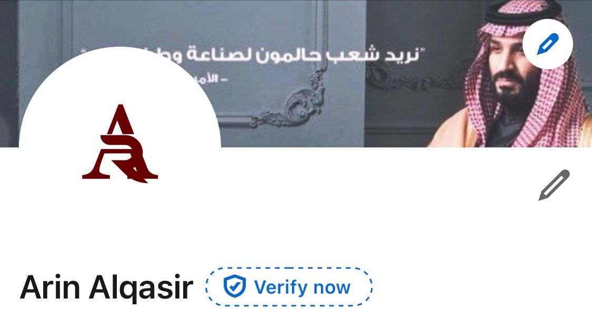

Summary :
I am a senior Computer Science student, working as a Software Engineer at Arsaan Al-Jazeera. In addition, I document tasks for the department at my university. I am passionate about continuous learning, exploring new fields, and enhancing my skills within my specialization. I strive to gain new experiences and apply theoretical knowledge to practical projects that contribute to improving technical performance
Education :
AlMaarefa University | جامعة المعرفة
, Bachelor's degree Computer Science 2021-2024
Work experience :
- Documenting the agency’s choresa at almaarefa university
- Founder | Committee Leader at almaarefa university
- Software Engineer | شركة أرسان الجزيرة للصيانة والتشغيل
skills :
- Project Management
- Team Leadership
- Communication Skills
- Problem-Solving
- Technical Expertise
- Collaboration and Coordination
- Attention to Detail